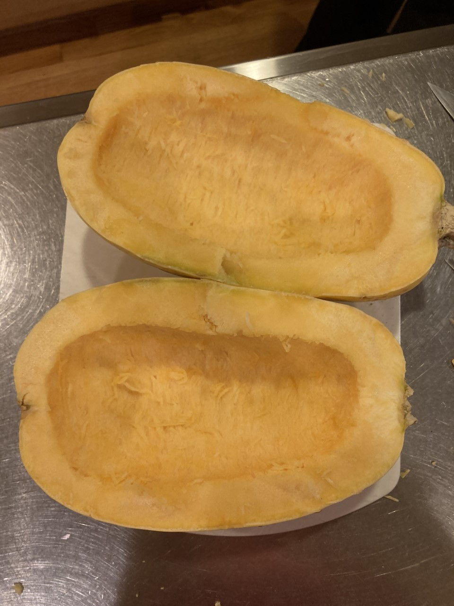
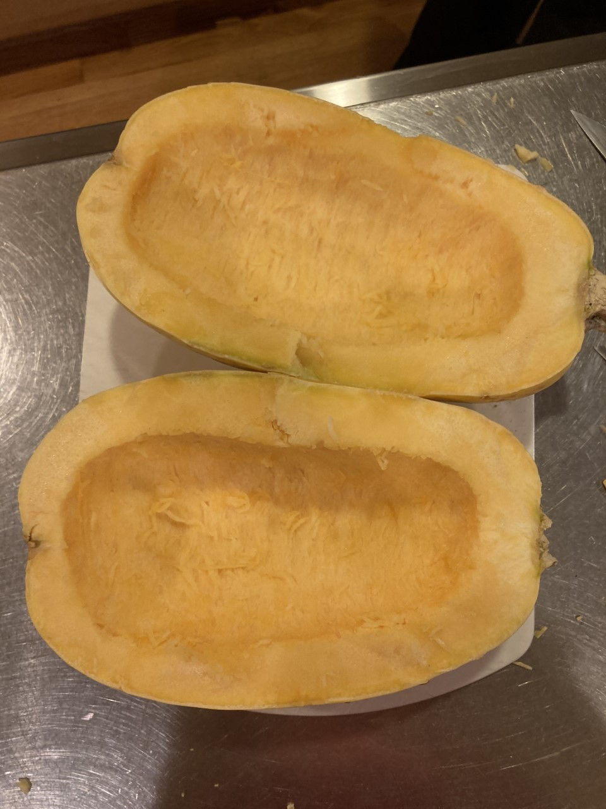

Lauren's Kitchen
Baked Margarita Spaghetti Squash
Indredients
- 1 Large Spaghetti Squash
- 2 Tbsp. Olive Oil
- 1 Large Roma Tomato, Finely Chopped
- 2 Tbsp. Fresh Basil, Finely Chopped
- 1/4 Cup Shredded Mozzarella Cheese
- 1 Tbsp. Each Salt & Pepper
- 1 tsp. Garlic Powder
Instructions
- Preheat oven to 400 degrees
- Using large knife or cleaver, slice the spaghetti squash in half lengthwise down the middle.


- Use a spoon to remove the seeds and center strings.
 

- Drizzle two halves with olive oil and then sprinkle with salt, pepper, and garlic powder.

- Place the squash, open side down on a cookie sheet and bake for 30 minutes.

- Remove from the oven, check to see if the squash is soft and easily comes up with a fork into spaghetti like texture.
If it is too hard to remove, cook for another 10 minutes.
- Remove from the oven, scrape and fluff the stringy squash with a fork (leave the squash in the skin).

- Turn the oven up to broil.
- Add the tomatoes and frehs basil into the squash, stir and top with mozarella cheese.
- Place in the broiler for 3-4 minutes, or until cheese is melted and slightly brown.

- Allow to cool for 5 minutes before serving.